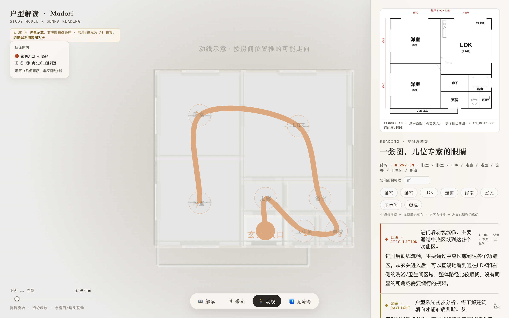
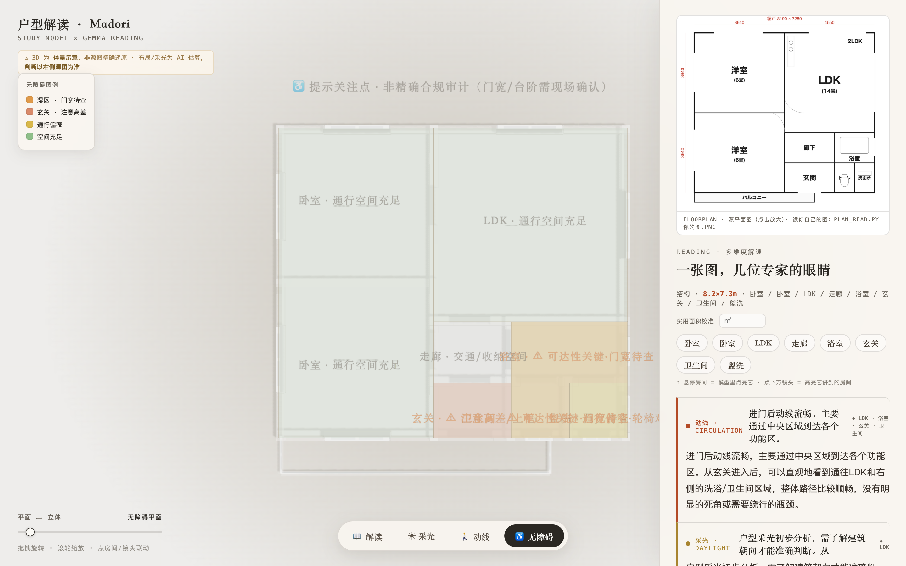

02
切一个视图，建筑师的一种眼睛就交给你
Four Lenses不是给你一段段文字让你读，而是把专业分析直接画在户型的 3D 平面上——切一下视图，分析就浮现在图上。
📖 解读
房间识别 + 五位专家镜头（动线 / 采光 / 无障碍 / 走读 / 批评）的大白话解读。点一个房间或一个镜头，3D 模型里对应位置实时点亮。

☀ 采光 确定性计算
选一下北朝向，每间房按它贴哪面外墙、朝哪个方位，算出采光等级：南向暖橙、东西黄、北向蓝、内间灰。转动朝向会实时重算——是算出来的事实，不是瞎猜。

🚶 动线 示意
从玄关出发，一条路径线穿过各房间 + 到达顺序编号，一眼看清「进门后怎么走」。按房间位置推的可能走向。

♿ 无障碍 提示
标出对老人 / 轮椅的关注点：湿区（门宽待查）、玄关（高差）、过窄的房间。一眼看到这个家哪里可能不友好。门宽 / 台阶需现场确认。